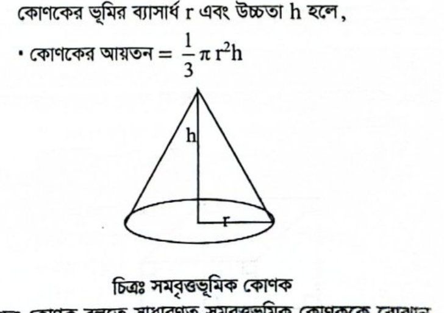

ঘনকের দৈর্ঘ্য = প্রস্থ = উচ্চতা = a হলে:
আয়তন = a³সমগ্রতলের ক্ষেত্রফল = 6a²কর্ণের দৈর্ঘ্য = a√৩একটি তলের ক্ষেত্রফল = a²
শীর্ষবিন্দু সংখ্যা ৮টি, তল সংখ্যা ৬টি, সমকোণীয় শীর্ষ ৮টি।
🧱 আয়তাকার ঘনবস্তু (Cuboid)
দৈর্ঘ্য = a, প্রস্থ = b, উচ্চতা = c হলে:
আয়তন = abcসমগ্রতলের ক্ষেত্রফল = 2(ab + bc + ca)কর্ণের দৈর্ঘ্য = √(a² + b² + c²)
তিন জোড়া সমান্তরাল আয়তাকার সমতল দ্বারা আবদ্ধ ক্ষেত্র।
🛢️ সিলিন্ডার বা বেলন (Cylinder)
ভূমির ব্যাসার্ধ = r, উচ্চতা = h হলে:
আয়তন = πr²hবক্রতলের ক্ষেত্রফল = 2πrhসমগ্রতলের ক্ষেত্রফল = 2πr(r + h)
সমবৃত্তভূমিক বেলনের দুই প্রান্ত বৃত্তাকার ও পার্শ্বতল বক্রাকার।
⚽ গোলক ও কোণক (Sphere & Cone)
গোলক (Sphere): ব্যাসার্ধ = r হলে:
আয়তন = (৪/৩)πr³পৃষ্ঠতলের ক্ষেত্রফল = 4πr²কোণক (Cone): ব্যাসার্ধ = r, উচ্চতা = h হলে:
আয়তন = (১/৩)πr²hহেলানো উচ্চতা l = √(r² + h²)
⏰ ঘড়ির কাঁটার কোণ নির্ণয়
ঘণ্টার কাঁটা (H) ও মিনিটের কাঁটার (M) মধ্যবর্তী কোণ:
θ = |(11M - 60H) / 2|
যদি θ > ১৮০° হয়, তবে ক্ষুদ্রতর কোণ = ৩৬০° - θ। উদাহরণ: ৪টা ৩০ মিনিটে কোণ = |(330 - 240)/2| = ৪৫°।
লাইভ স্কোর: ০ / 22
প্রশ্ন ১কারিগরি শিক্ষা অধিদপ্তর (ক্রাফট ইনস্ট্রাক্টর)-২১
ঘড়িতে এখন ৮টা বাজে। ঘণ্টার কাঁটা ও মিনিটের কাঁটার মধ্যকার কোণটি হলো-
ঘনক একটি ত্রিমাত্রিক সুষম ঘনবস্তু যার ৬টি সমান বর্গাকার তল থাকে। এর ৮টি শীর্ষবিন্দু রয়েছে এবং প্রতিটি শীর্ষবিন্দুতে পরস্পর লম্বভাবে ৩টি ধার মিলিত হয়। মূল বইয়ের উত্তর অনুসারে এর সমকোণীয় শীর্ষ সংখ্যা ৮টি (যদিও তলভিত্তিক মোট সমকোণ ৬ × ৪ = ২৪টি)।
প্রশ্ন ৪বিসিক (উর্ধ্বতন সমন্বয় কর্মকর্তা)-২৩
একটি ঘনক আকৃতির বস্তুর পৃষ্ঠতলের ক্ষেত্রফল 2400 বর্গ সে.মি. হলে ঘনকটির কর্ণের দৈর্ঘ্য কত সে.মি.?
প্রশ্ন ১২পরিবার পরিকল্পনা অধিদপ্তরের সহকারী পরিকল্পনা কর্মকর্তা-১২
একটি ঘনকের দৈর্ঘ্য, প্রস্থ ও উচ্চতা সমান। ঘনকটির আয়তন ৩৪৩ ঘন সেমি. হলে তার একটি তলের ক্ষেত্রফল কত?
📝 সঠিক উত্তর: খ
আমরা জানি, ঘনকের আয়তন = $a^3$ এবং একটি তলের ক্ষেত্রফল = $a^2$। প্রশ্নমতে, $$a^3 = 343 = 7^3 \implies a = 7\text{ সেমি}$$ অতএব, একটি তলের ক্ষেত্রফল = $$a^2 = 7^2 = \mathbf{৪৯}\text{ বর্গ সেমি}$$।
প্রশ্ন ১৩প্রবাসী কল্যাণ ও বৈদেশিক কর্মসংস্থান মন্ত্রণালয়ের সহকারী পরিচালক-১২
গোলকের আয়তনের সূত্র কোনটি?
📝 সঠিক উত্তর: গ
ব্যাসার্ধ $r$ বিশিষ্ট গোলকের আয়তন নির্ণয়ের সূত্র হলো: $$V = \mathbf{\frac{4}{3}\pi r^3} = \frac{4}{3}\pi\times (\text{ব্যাসার্ধ})^3$$।
প্রশ্ন ১৪৪৬তম বিসিএস / পিএসসি নন-ক্যাডার
একটি সিলিন্ডারের বৃত্তীয় তলের ব্যাসার্ধ ২ সে.মি. এবং উচ্চতা ৬ সে.মি. হলে, উহার তলগুলির মোট ক্ষেত্রফল কত?
📝 সঠিক উত্তর: খ
দেওয়া আছে, সিলিন্ডারের ভূমির ব্যাসার্ধ $r = 2$ সেমি এবং উচ্চতা $h = 6$ সেমি। সিলিন্ডারের সমগ্রতলের ক্ষেত্রফল = $$2\pi r(r + h) = 2\pi \times 2 \times (2 + 6) = 4\pi \times 8 = \mathbf{32\pi}\text{ বর্গ সেমি}$$।
প্রশ্ন ১৫পিএসসি - সুপারিনটেনডেন্ট-২৪
সমবৃত্তভূমিক সিলিন্ডারের ভূমির ব্যাসার্ধ ৫ সে.মি. এবং উচ্চতা ১২ সে.মি. হলে সিলিন্ডারের বক্রতলের ক্ষেত্রফল কত বর্গ সেমি.?
প্রশ্ন ১৮নার্সিং ও মিডওয়াইফারি অধিদপ্তর (সিনিয়র স্টাফ নার্স)-১৮
1 cm ব্যাসার্ধ বিশিষ্ট গোলকের আয়তন কত?
📝 সঠিক উত্তর: ক
$r$ ব্যাসার্ধ বিশিষ্ট গোলকের আয়তন = $\frac{4}{3}\pi r^3$ ঘন একক। এখানে $r = 1$ cm হলে, আয়তন = $$\frac{4}{3}\pi(1)^3 = \mathbf{\frac{4}{3}\pi}\text{ cm}^3$$।
প্রশ্ন ১৯জনশক্তি, কর্মসংস্থান ও প্রশিক্ষণ ব্যুরো (ইন্সট্রাক্টর)-১৮
গোলকের ব্যাসার্ধ r হলে উহার আয়তন সমান কত?
📝 সঠিক উত্তর: ক
ব্যাসার্ধ $r$ বিশিষ্ট গোলকের আয়তন = $$\mathbf{\frac{4}{3}\pi r^3}$$ ঘন একক।
প্রশ্ন ২০আইন, বিচার ও সংসদ বিষয়ক মন্ত্রণালয় সাব-রেজিস্ট্রার-১২
একটি গোলকের ব্যাসার্ধ দ্বিগুণ করা হলে গোলকের আয়তন বৃদ্ধি পাবে-
📝 সঠিক উত্তর: গ
গোলকের মূল আয়তন $V = \frac{4}{3}\pi r^3$। ব্যাসার্ধ দ্বিগুণ ($2r$) করা হলে নতুন আয়তন $V' = \frac{4}{3}\pi (2r)^3 = \frac{4}{3}\pi (8r^3) = 8 \times \left(\frac{4}{3}\pi r^3\right) = 8V$। অর্থাৎ আয়তন ৮ গুণ বৃদ্ধি পায় (বা ৮ গুণ হয়)।
প্রশ্ন ২১পিএসসি (ইকোনমিস্ট)-২৪
কোনো সমবৃত্তভূমিক কোণকের ভূমির ব্যাসার্ধ r মিটার এবং উচ্চতা h মিটার হলে, কোণকটির আয়তন কত?
📝 সঠিক উত্তর: গ

সমবৃত্তভূমিক কোণকের ভূমির ব্যাসার্ধ $r$ এবং উচ্চতা $h$ হলে এর আয়তন নির্ণয়ের সূত্র হলো: $$V = \mathbf{\frac{1}{3}\pi r^2 h}\text{ ঘন একক}$$।
ভূমির সাথে আলতোভাবে ঢিল ছুঁড়লে তা যে পথে পুনরায় ভূমি স্পর্শ করে তা-
📝 সঠিক উত্তর: ক
ভূমির সাথে তির্যকভাবে কোনো বস্তু নিক্ষেপ করলে এর গতিপথকে প্রাস (Projectile) বলে। অভিকর্ষীয় বলের প্রভাবে এ গতিপথটি বক্ররেখা ধারণ করে। বইয়ের সমাধান অনুযায়ী এর গতিপথকে অধিবৃত্তাকার হিসেবে উত্তর করা হয়েছে।